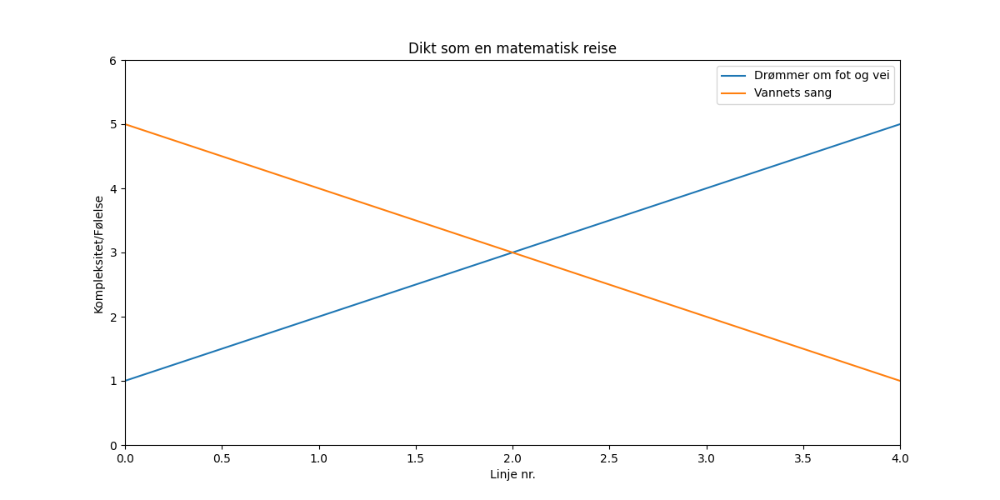

En gummistøvel i en bekk, en ensom, våt og gummigrekk. Den drømmer om en fot og vei, mens vannet synger: "Slipp meg lei".

import matplotlib.pyplot as plt
import numpy as np
# Dikt
dikt = """
En gummistøvel i en bekk,
en ensom, våt og gummigrekk.
Den drømmer om en fot og vei,
mens vannet synger: "Slipp meg lei".
"""
# Antall linjer i diktet
antall_linjer = len(dikt.splitlines())
# Generer X-verdier for linjene
x = np.arange(antall_linjer)
# Y-verdier (representerer "følelse" eller kompleksitet i linjen)
y1 = np.linspace(1, 5, antall_linjer) # Voksende følelse
y2 = np.linspace(5, 1, antall_linjer) # Avtagende følelse
# Plott linjene
plt.figure(figsize=(12, 6))
plt.plot(x, y1, label="Drømmer om fot og vei")
plt.plot(x, y2, label="Vannets sang")
# Legg til tittel og etiketter
plt.title("Dikt som en matematisk reise")
plt.xlabel("Linje nr.")
plt.ylabel("Kompleksitet/Følelse")
plt.legend()
# Juster aksene
plt.xlim(0, antall_linjer - 1)
plt.ylim(0, 6)
# Lagre figuren
plt.savefig(output_path)execution_ok=True fallback_used=False image_ok=True